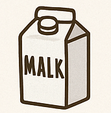

HOME
Roasted Peanut-Potato Bites with MALK Drizzle

Ingredients
- 1 large potato, cubed
- 2 tbsp chopped roasted peanuts
- 2 tbsp MALK
- Olive oil, salt, smoked paprika
Steps:
- Toss potatoes with oil, salt, and paprika. Roast at 400°F (200°C) for 30 min.
- Drizzle MALK over warm potatoes and sprinkle with peanuts before serving.